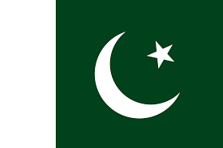

Welcome to My Website

The President
|
The Prime Minister
|

|

|
Pakistan
Pakistan, officially the Islamic Republic of Pakistan, is a country in South Asia. It is the world's fifth-most populous country with a population exceeding 212.2 million. By area, it is the 33rd-largest country, spanning 881,913 square kilometres
(340,509 square miles). Pakistan has a 1,046-kilometre (650-mile) coastline along the Arabian Sea and Gulf of Oman in the south and is bordered by India to the east, Afghanistan to the west, Iran to the southwest, and China to the northeast. It
is separated narrowly from Tajikistan by Afghanistan's Wakhan Corridor in the northwest, and also shares a maritime border with Oman.
The territory that now constitutes Pakistan was the site of several ancient cultures and intertwined with the history of the broader Indian subcontinent. The ancient history involves the Neolithic site of Mehrgarh and the Bronze Age Indus
Valley Civilisation, and was later home to kingdoms ruled by people of different faiths and cultures, including Hindus, Indo-Greeks, Muslims, Turco-Mongols, Afghans and Sikhs. The area has been ruled by numerous empires and dynasties, including
the Persian Achaemenid Empire, Alexander III of Macedon, the Seleucid Empire, the Indian Maurya Empire, the Kushan Empire, the Gupta Empire, the Arab Umayyad Caliphate, the Ghurid Sultanate, the Ghaznavids Empire, the Delhi Sultanate, the Mongol
Empire, the Mughal Empire, the Afghan Durrani Empire, the Sikh Empire (partially) and, most recently, the British Indian Empire.
Pakistan was created during the partition of India as a Muslim-majority region. It is an ethnically and linguistically diverse country, with similarly diverse geography and wildlife. Initially a dominion, Pakistan adopted a constitution in
1956, becoming an Islamic republic. An ethnic civil war and Indian military intervention in 1971 resulted in the secession of East Pakistan as the new country of Bangladesh. In 1973, Pakistan adopted a new constitution which stipulated that all
laws are to conform to the injunctions of Islam as laid down in the Quran and Sunnah.
A middle power, Pakistan has the sixth-largest standing armed forces in the world and is also a nuclear power as well as a declared nuclear-weapons state. It is ranked among the emerging and growth-leading economies of the world, and is backed
by one of the world's largest and fastest-growing middle class populations. Pakistan's political history since independence has been characterized by periods of military rule, political instability and conflicts with India. The country continues
to face challenging problems, including overpopulation, terrorism, poverty, illiteracy, and corruption. As of 2008 Pakistan has transitioned to civilian rule.[40] As of 2010 Pakistan is a parliamentary republic with periodic elections. Pakistan
is a member of the UN, the Shanghai Cooperation Organisation, the OIC, the Commonwealth of Nations, the SAARC, the Islamic Military Counter Terrorism Coalition, and is a major non-NATO ally.
The administrative units of Pakistan consist of four provinces (Balochistan, Khyber Pakhtunkhwa, Punjab, and Sindh), two autonomous territories (Azad Jammu and Kashmir, Gilgit-Baltistan) and one federal territory (Islamabad Capital Territory).
Balochistan
|
Balochistan is one of the four provinces of Pakistan. It is the largest province in terms of land area, forming the southwestern region of the country, but is the least populated. Its provincial capital and largest city is Quetta.
Balochistan shares borders with Punjab and the Khyber Pakhtunkhwa to the northeast, Sindh to the east and southeast, the Arabian Sea to the south, Iran to the west and Afghanistan to the north and northwest.
The main ethnic groups in the province are the Baloch people and the Pashtuns, who constitute 52% and 36% of the population respectively (according to the preliminary 2011 census). The remaining 12% comprises smaller communities
of Brahuis, Hazaras along with other settlers such as Sindhis, Punjabis, Uzbeks and Turkmens. The name "Balochistan " means "the land of the Baloch ". Largely underdeveloped, its provincial economy is dominated by natural resources,
especially its natural gas fields, estimated to have sufficient capacity to supply Pakistan's demands over the medium to long term. Aside from Quetta, the second-largest city of the province is Turbat in the south, while another area
of major economic importance is Gwadar Port on the Arabian Sea.
Balochistan is noted for its unique culture and extremely dry desert climate.
|
|
Khyber Pakhtunkhwa
|
Khyber Pakhtunkhwa (often abbreviated KP or KPK), formerly known as the North-West Frontier Province (NWFP) (Urdu: صوبہ سرحد), is one of the four administrative provinces of Pakistan, located in the northwestern region of the country
along the International border with Afghanistan.
It was previously known as the North-West Frontier Province until 2010 when the name was changed to Khyber Pakhtunkhwa by the 18th Amendment to Pakistan's Constitution and is known colloquially by various other names. Khyber Pakhtunkhwa
is the third-largest province of Pakistan by the size of both population and economy, though it is geographically the smallest of four. Within Pakistan, Khyber Pakhtunkhwa shares a border with Punjab, Balochistan, Azad Kashmir, Gilgit-Baltistan
and Islamabad. It is home to 17.9% of Pakistan's total population, with the majority of the province's inhabitants being Pashtuns and Hindko speakers.
The province is the site of the ancient kingdom Gandhara, including the ruins of its capital Pushkalavati near modern-day Charsadda. Once a stronghold of Buddhism, the history of the region was characterized by frequent invasions
by various empires due to its geographical proximity to the Khyber Pass.
On 2 March 2017, the Government of Pakistan considered a proposal to merge the Federally Administered Tribal Areas with Khyber Pakhtunkhwa, and to repeal the Frontier Crimes Regulations, which are currently applicable to the tribal
areas. However, some political parties have opposed the merger, and called for the tribal areas to instead become a separate province of Pakistan. On 24 May 2018, the National Assembly of Pakistan voted in favour of an amendment to
the Constitution of Pakistan to merge the Federally Administered Tribal Areas with Khyber Pakhtunkhwa province. The Khyber Pakhtunkhwa Assembly then approved the historic FATA-KP merger bill on 28 May 2018 making FATA officially part
of Khyber Pakhtunkhwa, which was then signed by President Mamnoon Hussain, completing the process of this historic merger.
|
|
Punjab
|
Punjab, About this soundlisten ' "Five waters "') is Pakistan's most populous province, with an estimated population of 110,012,442 as of 2017. Forming the bulk of the transnational Punjab region, it is bordered by the Pakistani provinces of Sindh, Balochistan,
and Khyber Pakhtunkhwa, the enclave of Islamabad, and Azad Kashmir. It also shares borders with the Indian states of Punjab, Rajasthan, and the Indian-administered territory of Jammu and Kashmir. The capital is Lahore, a cultural,
historical, economic and cosmopolitan centre of Pakistan where the country's cinema industry, and much of its fashion industry, are based.
In 326 BCE, Alexander the Great defeated King Porus at the Battle of the Hydaspes near Mong, Punjab. The Umayyad empire conquered Punjab in the 8th century CE. In the subsequent centuries, Punjab was invaded and conquered by the
Ghaznavids, Ghurids, Delhi Sultanate, Mughals, Durranis and the Sikhs. Punjab reached the height of its splendour during the reign of the Mughal Empire, which for a time ruled from Lahore. During the 18th century, Nader Shah's invasion
of the Mughal Empire caused Mughal authority in the Punjab to fall apart and it thus fell into chaos. The Durrani Afghans under Ahmad Shah Durrani wrested control of Punjab but lost it to the Sikhs after a successful rebellion which
allowed Sikh armies to claim Lahore in 1759. The Sikh Empire was established in 1799 under the rule of Ranjit Singh with his capital based in Lahore, until its defeat by the British. Punjab was central to the independence movements
of both India and Pakistan, with Lahore being site of both the Declaration of Indian Independence, and the resolution calling for the establishment of Pakistan. The province was formed when the Punjab province of British India was
divided along religious boundaries in 1947 by the Radcliffe Line after Partition.
|
|
Sindh
|
Sindh (Sindhi: سنڌ; Urdu: سندھ) is one of the four provinces of Pakistan. Located in the southeast of the country, it is the historical home of the Sindhi people. Sindh is the third largest province of Pakistan by area, and second largest province by
population after Punjab. Sindh is bordered by Balochistan province to the west, and Punjab province to the north. Sindh also borders the Indian states of Gujarat and Rajasthan to the east, and Arabian Sea to the south. Sindh's landscape
consists mostly of alluvial plains flanking the Indus River, the Thar desert in the eastern portion of the province closest to the border with India, and the Kirthar Mountains in the western part of Sindh.
Sindh has Pakistan's second largest economy, while its provincial capital Karachi is Pakistan's largest city and financial hub, and hosts the headquarters of several multinational banks. Sindh is home to a large portion of Pakistan's
industrial sector and contains two of Pakistan's commercial seaports, Port Bin Qasim and the Karachi Port. The remainder of Sindh has an agriculture based economy, and produces fruits, food consumer items, and vegetables for the consumption
of other parts of the country.
Sindh is known for its distinct culture which is strongly influenced by Sufism, an important marker of Sindhi identity for both Hindus (Sindh has Pakistan's highest percentage of Hindu residents)[10] and Muslims in the province.
Several important Sufi shrines are located throughout the province which attract millions of annual devotees.
Sindh's capital, Karachi, is Pakistan's most ethnically diverse city, with Muhajirs, or descendants of those who migrated to Pakistan from India after 1947 and throughout the 1950s and 1960s, making up the majority of the population.
Sindh is home to two UNESCO World Heritage Sites – the Historical Monuments at Makli, and the Archaeological Ruins at Mohenjodaro.
|
|
Azad Jammu and Kashmir
|
Azad Jammu and Kashmir (Urdu: آزاد جموں و کشمیر), abbreviated as AJK and commonly known as Azad Kashmir, is a region administered by Pakistan as a nominally self-governing jurisdiction, and constituting the western portion of the larger Kashmir region
which has been the subject of a dispute between India and Pakistan since 1947, and between India and China since 1962. The territory shares a border with Gilgit-Baltistan, together with which it is referred to by the United Nations
and other international organisations as "Pakistan administered Kashmir ". Azad Kashmir is one-sixth of the size of Gilgit-Baltistan. The territory also borders Pakistan's Punjab province to the south and Khyber Pakhtunkhwa province
to the west. To the east, Azad Kashmir is separated from the Indian administered Kashmir by the Line of Control, the de facto border between India and Pakistan. Azad Kashmir has a total area of 13,297 square kilometres (5,134 sq mi),
and a total population of 4,045,366 as per the 2017 Census.
The territory has a parliamentary form of government modelled after the Westminster system, with its capital located at Muzaffarabad. The President is the constitutional head of state, while the Prime Minister, supported by a
Council of Ministers, is the chief executive. The unicameral Azad Kashmir Legislative Assembly elects both the Prime Minister and President. The state has its own Supreme Court and a High Court, while the Government of Pakistan's Ministry
of Kashmir Affairs and Gilgit-Baltistan serves as a link with Azad Kashmir's government, although Azad Kashmir is not represented in the Parliament of Pakistan.
An earthquake in 2005 killed 100,000 people and left another three million people displaced, with widespread devastation. Since then, with help from the Government of Pakistan and foreign donors, reconstruction of infrastructure
is underway. Azad Kashmir's economy largely depends on agriculture, services, tourism, and remittances sent by members of the British Mirpuri community. Nearly 87% of the households own farms in Azad Kashmir, while the region has a
literacy rate of approximately 72% and has the highest school enrollment in Pakistan.
|
|
Gilgit-Baltistan
|
Gilgit-Baltistan (Urdu: گِلگِت بَلتِسْتان), formerly known as the Northern Areas, is a region administered by Pakistan as an administrative territory, and constituting the northern portion of the larger Kashmir region which has been the subject of a
dispute between India and Pakistan since 1947, and between India and China from somewhat later. It is the northernmost territory administered by Pakistan. It borders Azad Kashmir to the south, the province of Khyber Pakhtunkhwa to
the west, the Wakhan Corridor of Afghanistan to the north, the Xinjiang region of China, to the east and northeast, and the Indian-administered union territories Jammu and Kashmir and Ladakh to the southeast.
Gilgit-Baltistan is part of the greater Kashmir region, which is the subject of a long-running conflict between Pakistan and India. The territory shares a border with Azad Kashmir, together with which it is referred to by the
United Nations and other international organisations as "Pakistan administered Kashmir ". Gilgit-Baltistan is six times the size of Azad Kashmir. The territory also borders Indian-administered union territories Jammu and Kashmir (union
territory) and Ladakh to the south and is separated from it by the Line of Control, the de facto border between India and Pakistan.
The territory of present-day Gilgit-Baltistan became a separate administrative unit in 1970 under the name "Northern Areas ". It was formed by the amalgamation of the former Gilgit Agency, the Baltistan district and several small
former princely states, the larger of which being Hunza and Nagar. In 2009, it was granted limited autonomy and renamed to Gilgit-Baltistan via the Self-Governance Order signed by President of Pakistan Asif Ali Zardari, which also
aimed to empower the people of Gilgit-Baltistan. However, scholars state that the real power rests with the governor and not with chief minister or elected assembly. The population of Gilgit-Baltistan wants to be merged into Pakistan
as a separate fifth province and opposes integration with Kashmir. The Pakistani government has rejected Gilgit-Baltistani calls for integration with Pakistan on the grounds that it would jeopardise its demands for the whole Kashmir
issue to be resolved according to UN resolutions.
Gilgit-Baltistan covers an area of over 72,971 km² (28,174 sq mi) and is highly mountainous. It had an estimated population of 1.249 million in 2013 (estimated as 1.8 million in 2015 by Shahid Javed Burki (2015)). Its capital
city is Gilgit (population 216,760 est). Gilgit-Baltistan is home to five of the "eight-thousanders " and more than fifty peaks above 7,000 metres (23,000 ft). Three of the world's longest glaciers outside the polar regions are found
in Gilgit-Baltistan. The main tourism activities are trekking and mountaineering, and this industry is growing in importance.
|
|
Islamabad Capital territories
|
Islamabad Capital Territory (Urdu: وفاقی دارالحکومت) is the only federal territory of Pakistan. Located in north-central Pakistan between the provinces of Punjab and Khyber Pakhtunkhwa, it includes the country's federal capital
Islamabad. The territory is represented in the National Assembly constituencies NA-52, NA-53 and NA-54.
|
|
Currency
Currency Rates
| Currency |
Symbol |
Buying |
Selling |
| US DOLLAR |
USD |
159.5 |
160.5 |
| EURO |
EUR |
167 |
172 |
| BRITISH POUND |
GBP |
193 |
200 |
| UAE DIRHAM |
AED |
41.2 |
41.7 |
| SAUDI RIYAL |
SAR |
43 |
43.5 |
| INDIAN RUPEE |
INR |
2.04 |
2.11 |
| KUWAITI DINAR |
KWD |
496.5 |
499 |
| CANADIAN DOLLAR |
CAD |
110 |
115 |
| AUSTRALIAN DOLLAR |
AUD |
100 |
104 |
| OMANI RIYAL |
OMR |
411 |
413 |
| JAPANESE YEN |
JPY |
1.49 |
1.52 |
| MALAYSIAN RINGGIT |
MYR |
36.5 |
36.85 |
| QATARI RIYAL |
QAR |
42.75 |
43.1 |
| BAHRAIN DINAR |
BHD |
409 |
411 |
| THAI BHAT |
THB |
4.8 |
4.9 |
| CHINESE YAUN |
CNY |
21.95 |
22.1 |
| HONG KONG DOLLAR |
HKD |
20.3 |
20.55 |
| DANISH KRONE |
DKK |
22.65 |
22.95 |
| NEW ZEALAND DOLLAR |
NZD |
91.2 |
91.9 |
| SINGAPORE DOLLAR |
SGD |
108 |
112 |
| NORWEGIANS KRONE |
NOK |
15.23 |
15.48 |
| SWEDISH KRONA |
SEK |
15.75 |
16 |
| SWISS FRANC |
CHF |
159.5 |
160.8 |
Designed by